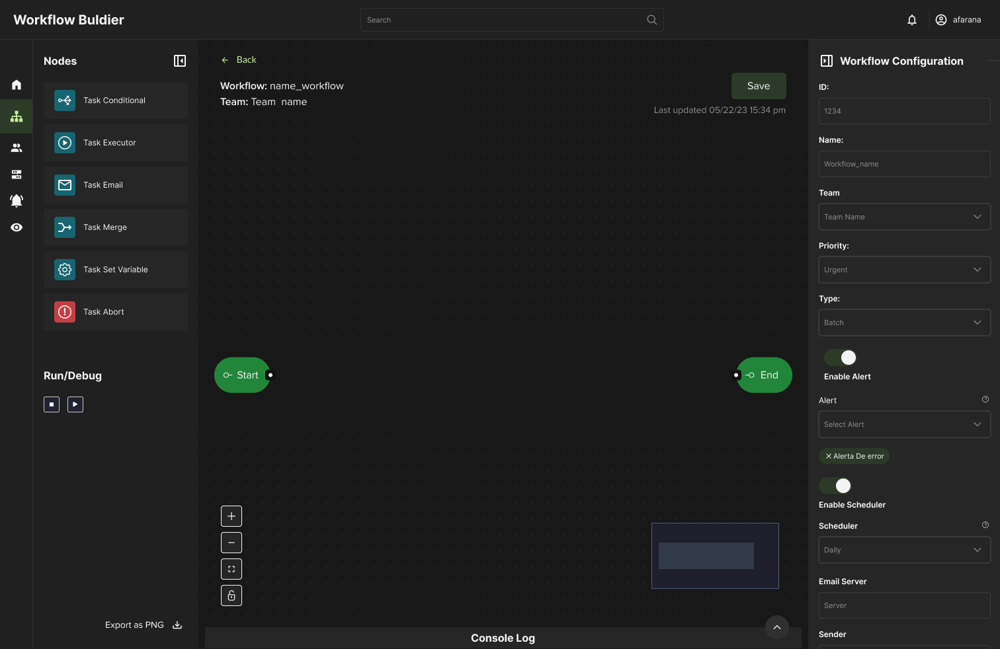

Workflow Builder
2023
Diseño de un editor visual para la creación y monitoreo de workflows en un dashboard interno de
un equipo de Data.
Diseñé desde cero un nuevo módulo para una herramienta interna, permitiendo crear automatizaciones complejas mediante un editor visual basado en nodos y monitorear su ejecución a través de una interfaz de logs.
